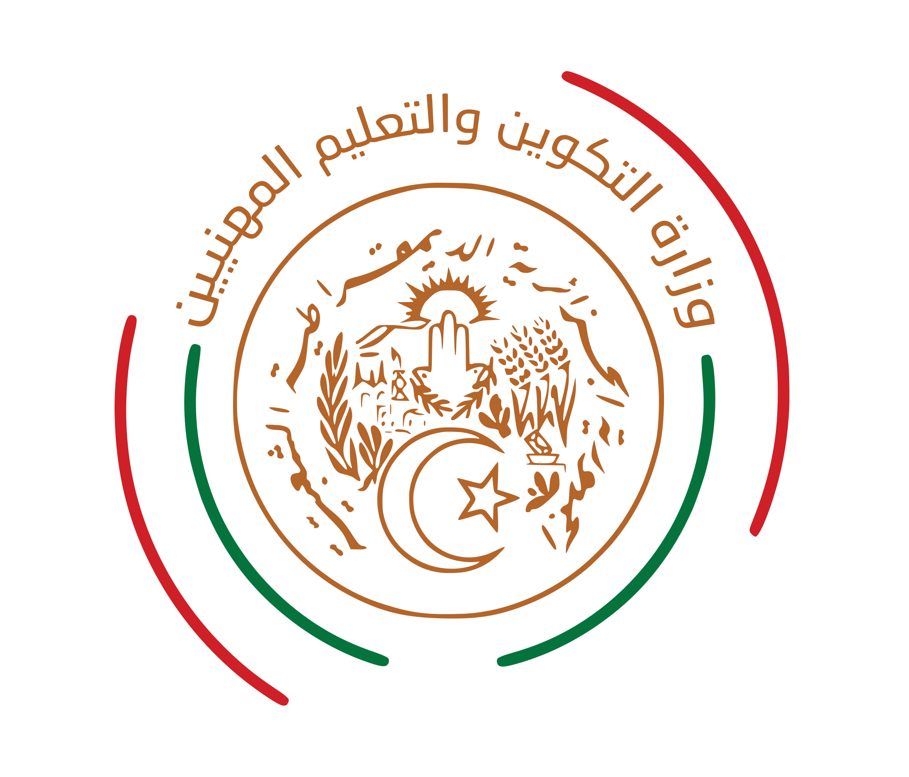

وزارة التكوين والتعليم المهنيين2 / 7
الجمهورية الجزائرية الديمقراطية الشعبية
عصرنة وتطوير نظام المعلومات الوطني لقطاع التكوين المهني (SGFEP)
إعداد وتقديم الإطار: حمزة أبو بكر الصديق
1. الملخص التنفيذي وأهداف المنصة
تعتبر منصة SGFEP الحل الاستراتيجي الشامل الموحد لربط وعصرنة كامل هياكل قطاع التكوين والتعليم المهنيين بالجزائر.
يقوم المشروع على إلغاء التسيير الورقي والبرمجيات المحلية المشتتة، واستبدالها ببيئة رقمية موحدة تجمع كافة البيانات في قاعدة بيانات وطنية واحدة.
- التسيير المركزي اللحظي: ربط مباشر للوزارة مع الولايات والمراكز.
- دعم اتخاذ القرار: إتاحة مؤشرات حية ودقيقة لصناع القرار.
- تحسين تجربة المستخدم: خدمات رقمية للمكون والمتربص.
2. هجرة وتحويل البيانات بنسبة 100%
تم بنجاح استخراج وترحيل البيانات التاريخية لقطاع التكوين المهني من النظام المشتت القديم HFSQL إلى نظام قواعد البيانات المطور MySQL/MariaDB بنسبة نجاح بلغت 100%.
3,219,406
مرشح (Candidats)
2,834,200
متربص (Apprenants)
84,279
مكون ومؤطر (Encadrement)
235,001
عرض تكويني (Offres)
تصحيح التشفير وترميم الأسماء: تم تشغيل محرك برمجى مخصص لتعديل تشفير النصوص العربية المتضررة في القواعد القديمة لضمان صحة الأسماء بنسبة 100%، وسد التواريخ التالفة.
3. هندسة التطوير والوسائل التكنولوجية
- تصميم برمجيات مرن (DDD): هيكلة الأكواد في مجالات معزولة تمنع تعطل المنصة وتسهل صيانتها وتحديثها بمرونة كاملة.
- محرك تقارير ذو استهلاك ذاكرة صفري (O(1)): بث تدفقي مباشر للمتصفح يمنع انهيار خوادم المنصة تماماً.
- تطبيقات الويب التقدمية (PWA): واجهات للهواتف الذكية تماثل تطبيقات الهاتف الأصلية.
http://sgfep.dfep.gov.dz

4. الأمن السيبراني والتحكم بالوصول
- تشفير الهوية الوطنية (NIN): تشفير الأرقام الوطنية للتعريف بالكامل في القاعدة باستخدام خوارزمية AES-256-CBC.
- تأمين وتشفير الميزانية: تشفير كشوف الرواتب وتقارير منح المتربصين إلكترونياً لحمايتها من الاختراق.
- سياسة أمان كلمات المرور: حظر الكلمات الضعيفة ومنع استخدام الـ NIN أو اسم المستخدم ككلمة مرور بشكل قطعي.
سجل التدقيق الرقابي الصارم (Audit Trail):
تسجيل كامل حركات الإضافة والتعديل وقراءة البيانات الحساسة مع هوية المنفذ وعنوان آيبى وجهازه، مع حجب كلمات المرور تلقائياً للحفاظ على خصوصيتها.
تسجيل كامل حركات الإضافة والتعديل وقراءة البيانات الحساسة مع هوية المنفذ وعنوان آيبى وجهازه، مع حجب كلمات المرور تلقائياً للحفاظ على خصوصيتها.
5. محاور ووظائف المنصة الوظيفية
يتكامل التسيير عبر أربعة محاور أساسية تغطي كافة متطلبات قطاع التكوين المهني:
البيداغوجيا
إدارة التسجيلات، الأفواج، السداسيات، الامتحانات، رصد الغيابات والشهادات.
الموارد البشرية
تسيير المكونين وحساب الساعات الشاغرة بجدول التوقيت آلياً لتفادي العجز.
المالية والمنح
التسيير المالي لمنح الطلبة واحتسابها بناءً على الحضور والانضباط البيداغوجي.
اللوجيستيك
جرد العتاد وتسيير تجهيزات الورشات التقنية وطلبها عبر الموبايل مباشرة.
6. التوصيات وخطة العمل المستقبلية
لتحقيق أقصى استفادة وتأمين كفاءة تشغيل النظام على المستوى الوطني:
- الإيقاف النهائي للبرمجيات المحلية: تعميم المنصة وحظر الأنظمة المعزولة لتوحيد البيانات.
- الربط الشبكي القطاعي: ربط المنصة بقاعدة بيانات وزارة العمل والتشغيل لمتابعة مسار إدماج المتخرجين في سوق الشغل.
- السيادة والاستضافة الذاتية: استضافة المنصة وقواعد البيانات المليونية في خوادم مركزية وطنية مؤمنة تابعة مباشرة للمركز الوطني للإعلام الآلي للقطاع.
استخدم:
←
→
أو
Space
للتنقل بين السلايدات